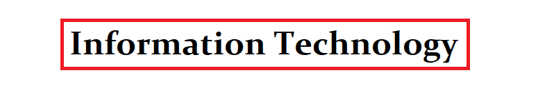

Year 1
Communication Skills Development
Visual Application programming
Mathematics for It
Web design
 ICT Application
Fundamentals of programming
Technical Writing
Information Managment
Computer Systems
System Analysis & Design
ICT project
ICT Application
Fundamentals of programming
Technical Writing
Information Managment
Computer Systems
System Analysis & Design
ICT project
Year 2
Object oriented programming
Data structures and Algorithms
Computer networks and operating systems
web programming
Database managment system
Multimedia Development
mobile Application development
Software Engineering
It quality assurance
It project managment
programming group project
Year 3
Discrete Mathematics
Professional practice
information security
project
Fundermentals of artificial Intelligence
Business accounting system
Managment principles
reasearch methodology
project
web services
Year 4
Marketing
Data mining
Probability and statistics
Managment Information systems
human computer Interactions
Quality assurance
articial cognitive Systems
Course Fee
Year 1= Rs500 000
Year 2= Rs500 000
Year 3= Rs300 000
Year 4= Rs200 000
Entry requirments
Students should obtain a minimum of 3 passes at the GCE Advanced Level or Foundation Certificate in Higher Education
and obtain a minimum of 6 passes in the GCE Ordinary Level with Credit passes in English & Mathematics.